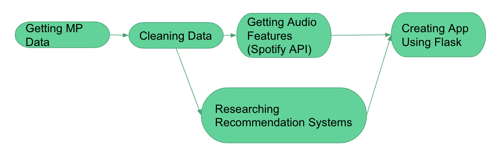
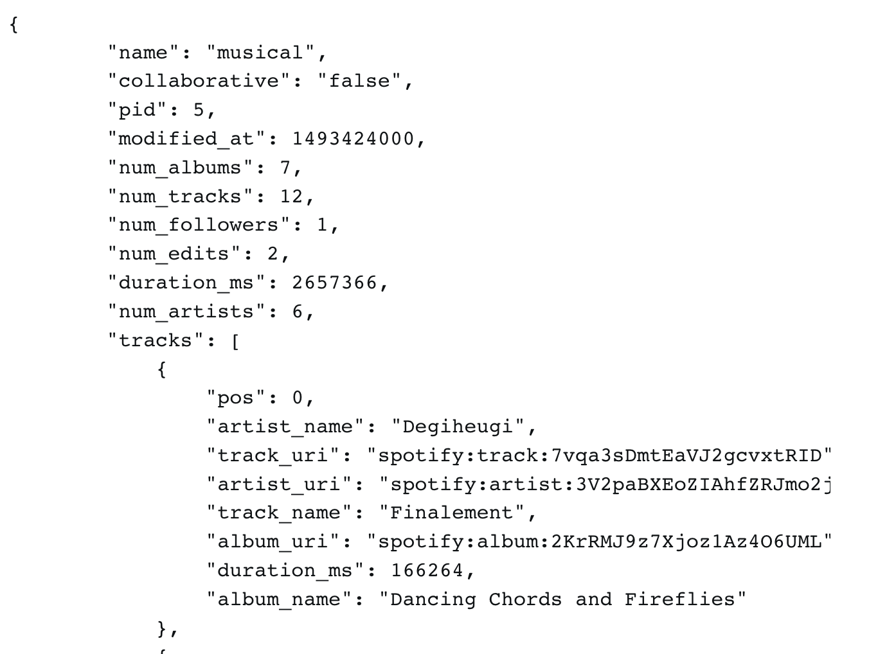
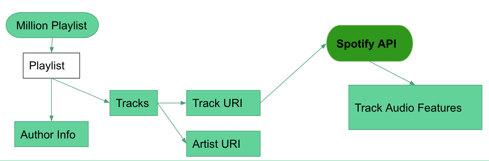
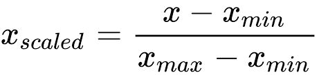
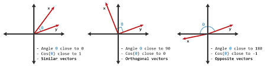
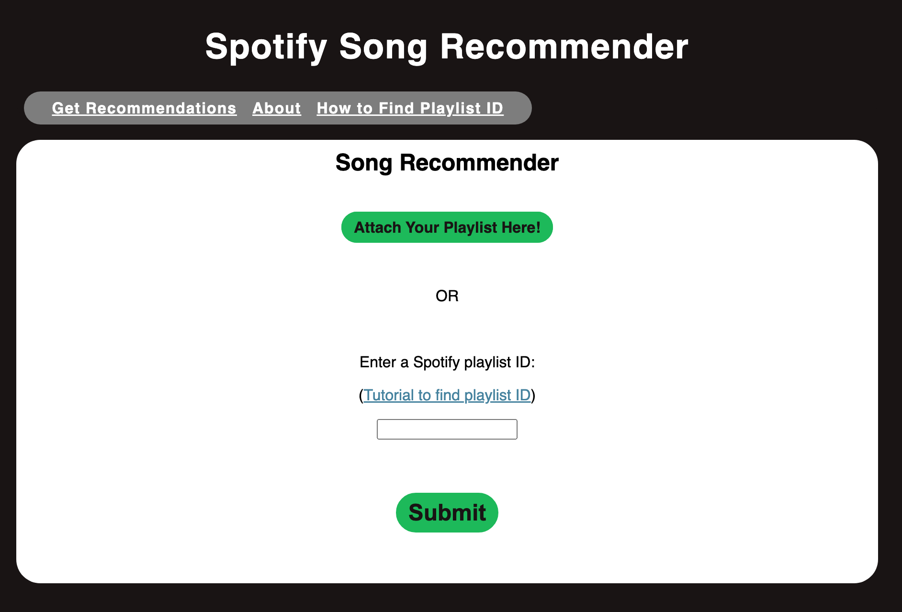
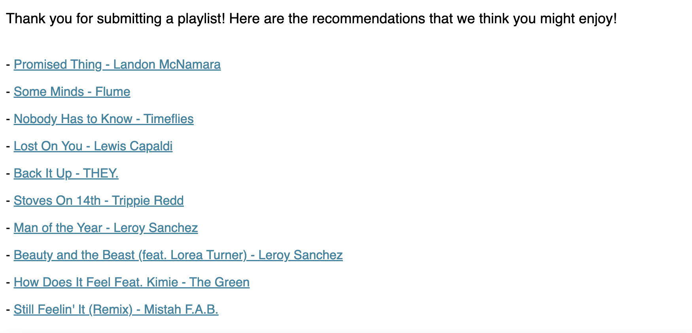

1. Introduction
With streaming services like Spotify, we have access to millions of songs at our fingertips. However, with so many options, it can be difficult to discover new artists and songs that we might enjoy. This is where recommendation systems come in.
This blog post is a recap of a final project for PIC16B W23 at UCLA. The goal of this project is to create a song recommendation system that would recommend songs for a given playlist. To do this, we utilized the Million Playlist Dataset, which Spotify provided for this purpose. There are 1 million playlists within this dataset, as the name suggests. With this data, we conducted our project through 4 main steps:
- Acquiring the data necessary for recommendation
- Cleaning the data
- Building the Recommendation System
- Connecting it with a website to host the recommendation system
This blog post will go through the process of creating a recommendation system step-by-step, as well as explain some of the methods we used to create it. We learned a lot through this project, and we hope that you do too! Now, let’s get into it. Here is a diagram of the project workflow.

2. Data Acquisition
Million Playlist Dataset
The first thing is to acquire the data necessary for this project. As mentioned in the introduction, we utilize the Spotify Million Playlist Dataset as our base dataset. This gives us each playlist in the form of a JSON file. Each playlist contains information about the playlist itself, like the number of songs, likes, playlist creator, etc. It also contains the information about the tracks within the playlist. For each track, there is information about the artist, the album it is a part of, and has unique identifiers for all of these things. This is all basic information that we can use. However, in order to build a recommendation system based on tracks and playlists, we need more than just demographic information of songs. We need to look into variables that would highlight specific features of songs. If you would like more information on the Million Playlist Dataset, please look at the official challenge spec

Above is the structure of the JSON file for an example playlist. This was provided by the provider of the Million Playlist Dataset, AICrowd. One can see all the playlist attributes listed, and the final one with all the tracks. In order to go through every single track in each playlist, we need to go through each of the different playlists and go through each of the tracks. After some experimentation, the fastest method was still to use a nested for loop to go through each element. However, this information given in the Million Playlist Dataset is not sufficient for our project.
Spotify API
This is where we need to connect to the Spotify API through spotipy. spotipy is a python library that allows users to connect to the Spotify API from the jupyter notebook, allowing access to get features from tracks, artists, and albums. To get this information, we need to have a secret key that we need to create via the Spotify Developer Dashboard. Once you create a project from the dashboard, it will give you a key and a secret to allow you to access the Spotify database.
Here is a diagram that displays the connection between the Million Playlist Dataset and the Spotify API.

Specifically, we want to look into getting the audio features of songs. These audio features are Spotify-created variables that describe a song quantitatively. Here is a list of the features that we use:
- Danceability
- Energy
- Speechiness
- Acousticness
- Instrumentalness
- Liveness
- Valence
- Loudness
- Tempo
- Mode
- Key
- Duration_ms
- Time_signature
From “danceability” to “valence”, the values range from 0 to 1, with 0 being the lowest score and 1 being the highest. With “loudness”, the range goes from -60 to 0, with units in decibels. The “tempo” is in beats per minute, and the “mode” and “key” are nonnegative integers. The “duration_ms” is how long the song is in milliseconds, and the “time_signature” is a value from 3 to 7 reflecting an estimated time signature. For a full description of what these variables mean, look at the official Spotify docs.
We can extract these audio features through spotipy.get_audio_features(uri), which takes in a track URI, which is a unique identifier for a given Spotify track. Here is a method that shows how we extracted the audio features for the songs, and saved it in a dataframe. This is the basis for extracting the data. Given our limited time frame and lack of resources, we only were able to extract features for 1,000 of the 1 million playlists. To expand on this project, we would want to look at how it pans out over even more playlists, but for the sake of this post, we will only be using 1,000 playlists.
import spotipy
from spotipy.oauth2 import SpotifyClientCredentials
import pandas as pd
from time import sleep
# Spotify credentials (unique to user) using different one to see if it works
os.environ["SPOTIPY_CLIENT_ID"] = "***"
os.environ["SPOTIPY_CLIENT_SECRET"] = "***"
os.environ['SPOTIPY_REDIRECT_URI'] = "http://localhost:5001"
sp = spotipy.Spotify(client_credentials_manager =
SpotifyClientCredentials(requests_timeout = 10))
cols_to_keep = ['danceability', 'energy', 'key', 'loudness', 'mode',
'speechiness', 'acousticness', 'instrumentalness', 'liveness',
'valence', 'tempo', 'duration_ms', 'time_signature']
dfs = []
def extract_data(playlists, n):
# can change playlists[0:n] depending on whether or not we want to include all the data.
i = 0
# for playlist in first 1000 playlists
for playlist in playlists[0:n]:
audio_feats = []
track_names = []
genres_list = []
artist_name = []
# for every 10 playlists
if i % 10 == 0:
print('Extracting playlist {0}...'.format(i))
# for each track in playlist
for track in playlist['tracks']:
# obtain track URI
track_uri = track['track_uri'].split(":")[2]
# obtain artist URI
artist_uri = track['artist_uri'].split(":")[2]
# get audio features from spotify
feature = sp.audio_features(track_uri)
if feature:
audio_feats.append(feature[0])
track_names.append(track['track_name'])
artist_name.append(track['artist_name'])
# make data frame of audio features for songs in playlist
feats = pd.DataFrame(audio_feats)
# add identification data
feats['track_name'] = pd.Series(track_names)
feats['artist_name'] = pd.Series(artist_name)
feats['playlist_name'] = playlist['name']
feats['pid'] = playlist['pid']
# list of data frames, each data frame representing tracks in a playlist
i += 1
dfs.append(feats.T)
sleep(5)3. Data Cleaning
From the data acquisition, we were able to get the features of songs from 1,000 playlists and contain all of this information on a CSV file. However, we still need to do some proper cleaning. This CSV is not in the optimal format for us to use for our analysis.
Getting Rid of Duplicate Songs
The first thing that we need to do is to get rid of duplicate songs. Since we are reading in all songs from 1,000 playlists, and that some songs are extremely popular, it is highly likely that there will be songs that appear on multiple playlists. In terms of getting audio features, this is not helpful, so we need to omit these rows. Below is a function that we use to do that.
def drop_dups(df, cols):
return df.drop_duplicates(subset = cols) # dropping duplicate songs, on subset of colsNormalizing the Data
Now that we have a dataset filled with only unique songs and their respective audio features, we can move forward with our processing of the data. Normalizing the data is a necessity in this project, because there are numeric variables that take on a wide range of values. For example, “danceability” has values from 0 to 1, while “duration_ms” has values that range from 0 to over 30000+. This may skew some of our results, placing too much weight on the “duration_ms” as opposed to other variables. To counteract this, we use a minimum-maximum scaler to normalize all numeric values to be between 0 and 1, based on the range in values for each feature. The logic and math behind it is shown below:

This is the method we used to create another CSV with only numeric variables reflecting the min-max normalization we mentioned above:
def norm_features(song_df):
'''
for the song df, normalize the numeric columns
@ inputs:
- song_df: df containing raw audio features of songs.
@ outputs:
- normalized_song_df: the normalized audio features of the songs
'''
# get numeric columns
numerics = ['int16', 'int32', 'int64', 'float16', 'float32', 'float64']
num_df = song_df.select_dtypes(include=numerics)
# scale these numeric columns
scaler = MinMaxScaler()
normalized_song_df = pd.DataFrame(scaler.fit_transform(num_df), columns = num_df.columns)
normalized_song_df['uri'] = song_df['uri'].values
return normalized_song_dfWe now have the cleaned data to build a recommendation system!
4. Building a Recommendation System
There are four different approaches to the recommendation system that we have attempted.
Audio Features
As mentioned above in the data cleaning, we sought to use the audio features from Spotify to help us create a recommendation system. Since we have a normalized data frame that was created above, we can use the normalized features for each song to represent a vector in a space. When we compare two songs, we are essentially comparing two vectors in the same vector space. To evaluate how “similar” two songs are to one another in this way, we utilize cosine similarity, which is looking at the angle between the two vectors to assess the similarity. If two vectors are the same (the same song), then cosine similarity will assign a score of 1, meaning that it is exactly similar, which makes sense. If the vector is pointed parallel, but in the opposite direction, the cosine similarity will assign a score of -1, meaning that they are not similar at all. Any angle in between will have a score between -1 and 1, with being closer to 1 meaning that the two songs are more similar.

We first utilize cosine similarity to assess the difference between two songs. This is done through our get_similarity_scores() method.
from collections import Counter
def get_similarity_scores(df, feat_df, uri, n, model_type = cosine_similarity):
'''
gets the top n songs to recommend songs similar to one song.
@ inputs:
- df (pd.DataFrame): input dataframe with audio features
- song_title (str): title of track
- n (int): number of recommended songs
- model_type (df): gets the cosine similarity of big matrix
@ outputs:
- pandas series. of recommended songs
'''
# Get song indices
index=indices[uri]
numerics = ['int16', 'int32', 'int64', 'float16', 'float32', 'float64']
num_df = feat_df.select_dtypes(include=numerics)
# print(index)
tfidf = model_type(num_df.iloc[index].values.reshape(1, -1), num_df[:].drop(index = index))[0]
# print(tfidf[0])
# Get list of songs for given songs
score=list(enumerate(tfidf))
# print(score)
# Sort the most similar songs
similarity_score = sorted(score,key = lambda x:x[1],reverse = True)
return Counter(dict(similarity_score))However, this only gets the similarity of one song compared to a whole data frame. How does this apply to a whole playlist? We use this function for each of the tracks, and then get an aggregate score for each recommended song. The logic of this approach is to assess the cosine similarity between all the songs in the playlist and all the songs in the normalized audio features data frame. We then add up all the scores by song id, and will take the top 10 songs based on this aggregate sum of cosine similarity. The method is shown below:
def get_top_songs(playlist, song_df, feat_df, n = 10):
total_score = Counter()
for track in playlist['tracks']:
total_score += get_similarity_scores(song_df, feat_df,
track['track_uri'], 5)
topn_index = indices[sorted(dict(total_score), key = lambda x: x, reverse = True)[0:n]].index
return [song_df['track_name'][song_df['uri'] == uri].values[0] for uri in topn_index]This is most definitely not the best method, as these quantitative features are not clustered well by genre. Multiple genres may show similar values within certain features. I expect electronic dance music (EDM) and metal to score highly on the loudness metric, even though they are two completely different genres. One improvement to make with this is to incorporate the genres of the songs with the audio features to make better assessments and recommendations.
Collaborative Filtering
The next three approaches will deal with a mathematical exploration of a technique common in the field of recommender systems, collaborative filtering. The premise of collaborative filtering is simple, being that if two people like one thing, then they are more likely to agree on their like/dislike for other things. Thanks to the Million Playlist Dataset, we have access to a massive amount of information concerning peoples’ preferences with respect to each other: deciding to include a song in one’s playlist is implicitly indicating a preference for that song. As a result, there are a wide variety of effective heuristics for determining similarity that can be applied to the user’s playlist, and the songs it contains, with respect to other playlists. We primarily opted to explore various forms of memory-based CF (also known as nearest-neighbor CF).
Item-Based Similarity
One approach to memory based CF, not unlike our method for audio features, is to view the user’s playlist as the sum of its parts. If we can find a way to determine similarity between any two songs, then we can take the similarity of each song in the user’s playlist with respect to every other song in our dataset, and then identify the songs with the highest summed similarity not already in the user’s playlist as potential recommendations. To find the similarity between any two songs, we employ the presence of a song in each playlist of our dataset as a binary vector, and compute the cosine similarity between these vectors accordingly. Finally, we weigh the summed similarity for each song based on its inverse document frequency, and select information from the songs having the highest final values. The functions used for this method are shown below:
def item_similarity(uri):
'''
gets the cosine similarity between an input song and every other song in the dataset
@ inputs:
- uri (string): input song's uri
@ outputs:
- counter dictionary whose keys are uri values of each song in dataset, values are similarity to input song
'''
#identifying row in binary_df corresponding to input song
song_row = binary_df.loc[uri].values.reshape(1, -1)
#computing similarity between input song and all other songs
similarity_scores = cosine_similarity(binary_df, song_row)
similarity_dict = {}
#creating a dictionary with URI as keys, associated similarity as values
for i, score in enumerate(similarity_scores):
similarity_dict[str(binary_df.index[i])] = score[0]
#returning counter version of dictionary, so that we can add it to others
return Counter(similarity_dict)
def get_top_items(playlist, n = 10):
'''
determines which songs to recommend by summing binary item-based similarity for songs in user playlist, weighted with idf
@ inputs:
- playlist (dict): playlist that includes track info
- n (int): number of songs to recommend ; 10 for us
@ outputs:
- a list of tuples containing track name, artist name, and track link for unique songs with highest similarity score
'''
#creating an empty counter to store total similarity score
total_score = Counter()
for track in playlist['tracks']:
#using addition assignment to add each similarity score
if track['track_uri'] in binary_df.index:
total_score += item_similarity(track['track_uri'])
#applying IDF weighting to total similarity score
for uri in total_score.keys():
total_score[uri] *= idf_df.loc[uri][0]
#preventing songs in user input playlist from being suggested
repetition_blocker(total_score, playlist)
#using heap to find list of URIs associated with highest total similarity scores
top_songs = [items[0] for items in heapq.nlargest(n, total_score.items(), key=lambda x: x[1])]
#top_songs = heapq.nlargest(n, total_score.items(), key=lambda x: x[1])
#returning a list of tuples containing the track name, artist name, and a link to the song for the most similar songs
return [(song_df['track_name'][song_df['uri'] == uri].values[0],
song_df['artist_name'][song_df['uri'] == uri].values[0],
'//open.spotify.com/track/' + song_df['id'][song_df['uri'] == uri].values[0]) for uri in top_songs]Session-Based Similarity
Another approach to memory based CF is to find a way to compare playlists directly over the song space. Instead of viewing songs as binary vectors based on their presence in playlists, we can view playlists as binary vectors based on whether or not they contain each song, and calculate cosine similarities between playlists accordingly. Then, for each song, we can take the idf-weighted sum of the aforementioned similarity between the user’s playlist and every playlist in the dataset that contains that song to yield a total similarity score, returning the same information as before about those songs with the highest total similarity scores. The functions used for this method are shown below:
def is_uri_in_playlist(uri, playlist):
'''
determines whether or not each song in the dataset is in the user's playlist
@ inputs:
-uri (str): input song's uri
- playlist (dict): playlist that includes track info
@ outputs:
- true or false depending on whether or not song is in playlist
'''
#iterating through each track in user input playlist
for track in playlist['tracks']:
#checking if desired URI matches a track's URI
if track['track_uri'] == uri:
#returning true if we find a match
return True
#returning false otherwise
return False
def session_similarity(playlist, n = 10):
'''
determines which songs to recommend by summing binary session-based similarities of playlists containing
each song, weighted with IDF
@ inputs:
- playlist (dict): playlist that includes track info
- n (int): number of songs to recommend ; 10 for us
@ outputs:
- a list of tuples containing track name, artist name, and track link for unique songs with highest similarity score
'''
#creating a binary encoding of the user input playlist w.r.t. dataset
encoded_playlist = [int(is_uri_in_playlist(uri, playlist)) for uri in binary_df.index]
#computing similarity between input playlist and all other playlists
session_similarity = cosine_similarity(binary_df.values.T, [encoded_playlist]).flatten()
#creating an empty counter to store total similarity score
total_score = {}
#iterating through each song in dataset
for uri in binary_df.index:
#taking dot product of playlist similarities and song's presence in each playlist, applying IDF weighting
total_score[uri] = sum(i[0] * i[1] for i in zip(binary_df.loc[uri].values, session_similarity)) * idf_df.loc[uri][0]
#preventing songs in user input playlist from being suggested
repetition_blocker(total_score, playlist)
#using heap to find n highest total similarity scores
top_songs = [items[0] for items in heapq.nlargest(n, total_score.items(), key=lambda x: x[1])]
#returning a list of tuples containing the track name, artist name, and a link to the song for the most similar songs
return [(song_df['track_name'][song_df['uri'] == uri].values[0],
song_df['artist_name'][song_df['uri'] == uri].values[0],
'//open.spotify.com/track/' + song_df['id'][song_df['uri'] == uri].values[0]) for uri in top_songs]TF-IDF-Based Similarity
Our final approach to memory based CF is to incorporate term frequency into the computation of our similarity heuristic. Unlike inverse document frequency, our term frequency has no dependence upon a particular song. The idea we want to capture is that if a user’s playlist contains fewer songs, then any given song is a stronger indication of their interest than a playlist that contains many songs. Therefore, we assign to each playlist a term frequency value of 1/(|p|+50), where |p| is the number of songs in that playlist and 50 is chosen so as not to excessively reward very small playlists. Then, each song/playlist pair is assigned a value equal to the product of the song’s IDF and the playlists TF (irrespective of whether or not the playlist contains that song), and we compute cosine similarity on playlists and total song similarity for each song identically to the session-based method, except, as we have already accounted for IDF, we do not reweigh final scores based on IDF. Once again, we return relevant information about the songs with the highest total similarity scores. The functions used for this method are shown below:
def is_uri_in_playlist(uri, playlist):
'''
determines whether or not each song in the dataset is in the user's playlist
@ inputs:
-uri (str): input song's uri
- playlist (dict): playlist that includes track info
@ outputs:
- true or false depending on whether or not song is in playlist
'''
#iterating through each track in user input playlist
for track in playlist['tracks']:
#checking if desired URI matches a track's URI
if track['track_uri'] == uri:
#returning true if we find a match
return True
#returning false otherwise
return False
def session_similarity(playlist, n = 10):
'''
determines which songs to recommend by summing binary session-based similarities of playlists containing
each song, weighted with IDF
@ inputs:
- playlist (dict): playlist that includes track info
- n (int): number of songs to recommend ; 10 for us
@ outputs:
- a list of tuples containing track name, artist name, and track link for unique songs with highest similarity score
'''
#creating a binary encoding of the user input playlist w.r.t. dataset
encoded_playlist = [int(is_uri_in_playlist(uri, playlist)) for uri in binary_df.index]
#computing similarity between input playlist and all other playlists
session_similarity = cosine_similarity(binary_df.values.T, [encoded_playlist]).flatten()
#creating an empty counter to store total similarity score
total_score = {}
#iterating through each song in dataset
for uri in binary_df.index:
#taking dot product of playlist similarities and song's presence in each playlist, applying IDF weighting
total_score[uri] = sum(i[0] * i[1] for i in zip(binary_df.loc[uri].values, session_similarity)) * idf_df.loc[uri][0]
#preventing songs in user input playlist from being suggested
repetition_blocker(total_score, playlist)
#using heap to find n highest total similarity scores
top_songs = [items[0] for items in heapq.nlargest(n, total_score.items(), key=lambda x: x[1])]
#returning a list of tuples containing the track name, artist name, and a link to the song for the most similar songs
return [(song_df['track_name'][song_df['uri'] == uri].values[0],
song_df['artist_name'][song_df['uri'] == uri].values[0],
'//open.spotify.com/track/' + song_df['id'][song_df['uri'] == uri].values[0]) for uri in top_songs]Session-Based Similarity
In order to accept the playlist ID, we needed to build a function that could use the playlist ID and call the Spotify API to return the track URIs for the tracks in the playlist. First, we will use the spotipy library to access the playlist, set up authorization using the Spotify client ID and secret, and retrieve the list of track URIs and names. Then, we will create a list of dictionaries where each dictionary has a key track_uri with a value of the URI of a track. The output would be a dictionary with one key called tracks that has a value that is the list of dictionaries created above. This mimics the format of the playlists that come from a json file, so that the output can be passed into get_top_songs(). The function that handles this is defined below:
def get_playlist_track_URIs(playlist_id):
'''
gets the track URIs from a Spotify playlist
@ inputs:
- playlist_id (str)
The unique identifier for the Spotify playlist.
@ output:
dict containing: track_uris (list of str)
A list of the track URIs for all tracks in the playlist.
track_names (list of str)
A list of the track names for all tracks in the playlist.
'''
# Set up authorization using the Spotify client ID and secret
client_credentials_manager = SpotifyClientCredentials(client_id='bdf64242b8364ab5b264d3c14e8e9af6', client_secret='3ed931eb80d8412292a50a10ed96e611')
sp = spotipy.Spotify(client_credentials_manager=client_credentials_manager)
# Get track URIs and names from playlist
results = sp.playlist_tracks(playlist_id)
tracks = results['items']
playlist_tracks = []
for track in tracks:
track_uri = track['track']['uri']
playlist_tracks.append({'track_uri': track_uri})
return {"tracks": playlist_tracks}5. Building A Website to Host Recommendation System
Now, we need to take all of these components into consideration when making our website. For this project, we use Flask to run our web app. On our home page, we have the recommendation app itself. It can take either a playlist id or a JSON file representing a playlist as its input, and it will output the recommendations after clicking “Submit”. The styling was based on trial and error, using official Spotify colors. The second page we built was the about page, where you can see all of our contact information.


There are three pages on our website: Get Recommendations, About, and How to Find Playlist ID. Accordingly, there are three functions used to define these three pages.
The first function we will walk through is the Get Recommendations page. In this function, if the method is GET, it returns the rendered HTML template defined in recommend.html. Otherwise, if the method is POST, it processes the input data to find the top recommended songs based on a user’s submitted playlist using get_playlist_track_URIs() if a playlist ID is inputted and get_file() if a file is uploaded. In either case, get_top_songs() will be run to produce the recommendations once the playlist is identified. If the recommendation process is successful, it returns the rendered HTML template recommend.html displaying the top recommended songs. If there is an error during the process, it will return an error message.
@app.route('/', methods=['POST', 'GET'])
def recommend():
if request.method == 'GET':
return render_template('recommend.html') # default recommend.html display
else: # if someone posts
try:
# get playlist, and find top songs
playlist = request.form['playlist_id']
# checks to see if playlist has been submitted as ID or json file
if not playlist:
playlist = get_file(request)
else:
# get track URIs and names from playlist using Spotify API
playlist = get_playlist_track_URIs(playlist)
top_songs = get_top_songs(playlist, song_df, feats_df)
# display the top songs
return render_template('recommend.html', recs = top_songs)
except:
# return an error
return render_template('recommend.html', error = True)The second function creates a simple About page. It will render a page with information about the creators that is defined in about.html. The construction of this function is similar to that of the function defined previously.
@app.route('/about/')
def about():
try:
# about page for creators
return render_template('about.html', msgs = msgs)
except:
# return an error
return render_template('about.html', error = True)Lastly, we will create a third function that creates a page that instructs the user on how to obtain the spotify playlist ID of any playlist. Similar to the function defining the About page, this function will render an HTML template that is defined in tutorial.html.
@app.route('/tutorial/')
def tutorial():
try:
# tutorial page for how to find playlist id
return render_template('tutorial.html', msgs = msgs)
except:
# return an error
return render_template('tutorial.html', error = True)6. Conclusion
Creating this Spotify recommendation system involved four main steps: acquiring data, cleaning data, building the recommendation algorithm, and connecting it with a website. The Million Playlist Dataset provided by Spotify was used to acquire playlist information, and the Spotify API (reached via the spotipy library) was used to obtain audio features of songs. Data cleaning involved removing duplicate songs and normalizing data. Building the recommendation system involved cosine similarity measures to determine songs that have similar audio features. Finally, the system was deployed on a Flask web application where users could input a playlist, and the system would provide a list of song recommendations.
As for all data science projects, it is important to consider the ethical ramifications of what we create. A potential bias that may arise from this project could be that more well-known artists could be prioritized in recommendations, since we are recommending songs that are already in user playlists. This could unintentionally affect artists that have less popularity due to historical biases. Another potential source of bias is that the recommendation system may not work as well for music in foreign languages, since there will be less data of this type in the training dataset. If we wanted to improve the recommendation system for these types of songs, we would need to include datasets with more language diversity so that the model has more data points of this type to work with.
Developing a Spotify recommendation system using Million Playlist Dataset and the Spotify API can be a rewarding and fun project for anyone interested in data science and music. Additionally, with the power of Flask, you can create a simple interface that allows users to submit their playlists and receive song recommendations in real-time. Overall, this project is an excellent way to explore how data science can be used for music and to explore various APIs and Python libraries.
GitHub Repository
Here is the GitHub repository if you would like to check it out.